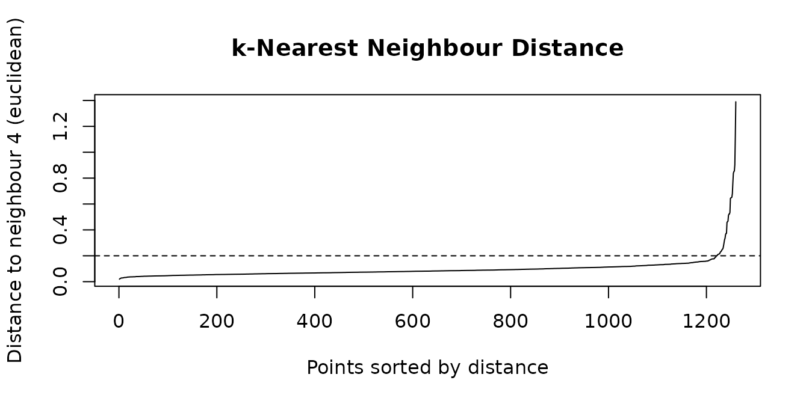
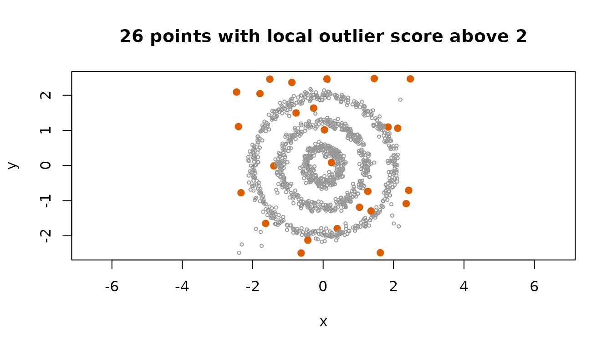

Every clustering algorithm rests on a notion of how far apart two
rows are. shoal exposes that layer directly through two functions.
shoal_dist() computes every pairwise distance and returns
R’s own dist class. shoal_knn() finds each
row’s k nearest neighbours and returns their indices and
distances. Both take the same nine metrics and agree with each other to
the last bit.
The calls are simple. The decisions around them are not, and this vignette is organised around four of them: which metric, a full matrix or neighbours only, a tree or a scan, and what to build from a neighbour result once you have one.
Which metric
| Metric | Measures | Reach for it when |
|---|---|---|
euclidean |
Straight-line distance. | Columns are on comparable scales. The default, and what k-means assumes. |
manhattan |
Sum of absolute differences. | Outlying values in one column should not dominate. |
maximum |
Largest single difference. | One column out of tolerance is what matters. |
minkowski |
The family that contains the three above, with power
p. |
You want something between Manhattan and Euclidean. |
canberra |
Absolute differences relative to magnitude. | Counts and abundances, where a difference of 1 means more near zero. |
binary |
Fraction of positions where exactly one row is non-zero. | Presence and absence data. |
cosine |
One minus the cosine of the angle between the rows. | Direction matters and magnitude does not: embeddings, term counts. |
correlation |
One minus the Pearson correlation across the columns. | Profiles should match in shape regardless of level or scale. |
mahalanobis |
Euclidean distance after decorrelating and scaling the columns. | Columns are correlated or on different scales and you want each to count once. |
The metrics shared with stats::dist() follow its
definitions exactly, including the way Canberra drops degenerate terms
and the fact that its denominator is |x| + |y| as the C
code computes it, not the |x + y| its documentation states.
Cosine is correlation without centring each row on its own mean, so the
two agree on rows that already average zero.
A simple check of what a metric does is to ask how often a row’s nearest neighbours share its label. On iris, most metrics agree with the species about 95 percent of the time.
species <- iris$Species
agreement <- function(metric) {
nn <- shoal_knn(x, k = 5L, metric = metric)
mean(species[nn$id] == species[row(nn$id)])
}
sapply(c("euclidean", "manhattan", "cosine", "correlation", "mahalanobis"),
agreement)
#> euclidean manhattan cosine correlation mahalanobis
#> 0.9480000 0.9466667 0.9573333 0.9480000 0.8613333Mahalanobis does worse, and the reason is instructive. It whitens
with the covariance of the whole sample, and in iris the largest
correlated direction, petal length against petal width, is also the
direction that separates the species. Whitening on the pooled covariance
shrinks exactly the axis that carries the signal. Mahalanobis is the
right choice when the correlation is within-group structure you want to
discount, not between-group structure you want to find. Pass
cov to whiten with a covariance estimated from a single
group, or from a reference sample, and that problem goes away.
A full matrix or neighbours only
A distance matrix holds every pair, which is
n (n - 1) / 2 numbers. A neighbour search holds
k per row. The difference is not a constant factor; it is
the difference between quadratic and linear.
d <- shoal_dist(x)
nn <- shoal_knn(x, k = 10L)
object.size(d)
#> 90800 bytes
object.size(nn$dist) + object.size(nn$id)
#> 20256 bytesAt 150 rows both are trivial. At 50,000 rows the matrix is 9.3 GB and the neighbours are under 6 MB. At a million rows the matrix does not exist, and the neighbours are a search of a few seconds.
Reach for the matrix when a consumer needs every pair:
shoal_hclust(), shoal_silhouette(),
cmdscale(), cluster::pam(). Even then, if the
matrix is only a stepping stone to a dendrogram, pass the raw data to
shoal_hclust() instead; it writes the distances straight
into the buffer the clustering consumes and never holds a second copy.
Reach for neighbours for everything else.
The two functions share every convention that can be shared. Rows
with missing or non-finite values are dropped by
shoal_dist(), with a warning, and refused by
shoal_knn(), because dropping rows would renumber the
indices it returns. Ties in a neighbour search are broken by row index,
so a result is fully determined by its input.
A tree or a scan
shoal_knn() has two exact search algorithms behind it. A
kd-tree partitions space and skips regions that cannot hold a nearer
point. A scan compares every pair in parallel. Both return identical
results, tie order included, so the choice is purely about speed, and
the rule is dimension. A tree prunes well in a few dimensions and hardly
at all beyond about ten, where the scan is several times faster than any
tree. The default search = "auto" takes the tree up to 8
columns and the scan beyond.
tree <- shoal_knn(x, k = 5L, search = "kdtree")
scan <- shoal_knn(x, k = 5L, search = "brute")
identical(tree$id, scan$id) && identical(tree$dist, scan$dist)
#> [1] TRUEThe tree serves every metric except Canberra and binary, whose
distances no rectangle can bound. Cosine and correlation go through a
normalised copy of the rows, on which Euclidean distance orders points
exactly as the metric does, while the distances reported are still the
metric itself. Force search = "brute" when you know the
data is wide, or search = "kdtree" when it is narrow but
has more than 8 columns and you want to check for yourself.
What to build from neighbours
A neighbour result is a small, regular structure: id and
dist, one row per point, nearest first. Several things the
package does not do itself are a few lines from it.
The radius for DBSCAN
Each point’s distance to its k-th neighbour, sorted, has
an elbow where the dense points end and the sparse ones begin. That
elbow is eps, with min_samples = k + 1 because
DBSCAN counts the point itself. The plot() method draws it;
vignette("shoal") walks through the choice on the
rings data.

A neighbour graph
Many methods, spectral clustering and UMAP among them, start from a sparse graph that joins each point to its neighbours. The edge list is a reshape of the result, and keeping only edges that appear in both directions gives the mutual neighbour graph, which is sparser and drops the links from noise points into clusters.
nn <- shoal_knn(rings, k = 5L)
edges <- data.frame(
from = rep(seq_len(nrow(nn$id)), times = ncol(nn$id)),
to = as.vector(nn$id),
weight = as.vector(nn$dist)
)
pair <- paste(pmin(edges$from, edges$to), pmax(edges$from, edges$to))
mutual <- edges[duplicated(pair), ]
c(directed = nrow(edges), mutual = nrow(mutual))
#> directed mutual
#> 6300 2337igraph::graph_from_data_frame(mutual, directed = FALSE)
takes that as it is.
A local outlier score
A point whose k-th neighbour is far away, relative to
how far its neighbours’ own k-th neighbours are, sits in a
sparser region than the points around it. The ratio is a local outlier
score in the spirit of the local outlier factor, computed in two
lines.
dk <- nn$dist[, ncol(nn$dist)]
score <- dk / rowMeans(matrix(dk[nn$id], ncol = ncol(nn$id)))
top <- order(score, decreasing = TRUE)[1:60]
hdb <- shoal_hdbscan(rings, min_cluster_size = 15L, min_samples = 5L)
table(hdbscan_noise = is.na(hdb$cluster[top]))
#> hdbscan_noise
#> FALSE TRUE
#> 39 21The 60 highest scores catch 21 of the 26 points HDBSCAN calls noise. The rest are points on a ring that happen to sit in a local gap, which is what a purely local score will say: it knows about the neighbourhood and nothing about the cluster. HDBSCAN’s GLOSH score, returned on every result, is the principled version of the same idea and uses the cluster hierarchy to tell the two apart.
A score of 2 says a point’s neighbourhood is twice as sparse as its neighbours’ are. Marking the points above that shows where the score puts its attention.
flag <- score > 2
plot(rings, asp = 1, pch = ifelse(flag, 19, 1), cex = ifelse(flag, 1, 0.5),
col = ifelse(flag, "#D95F02", "grey60"),
main = sprintf("%d points with local outlier score above 2", sum(flag)))
Classifying new rows
Given labelled rows, the label of a new row is a vote among its
nearest labelled neighbours. query searches new rows
against the reference set without them being candidates for one
another.
set.seed(1)
train <- sample(nrow(x), 100)
test <- setdiff(seq_len(nrow(x)), train)
q <- shoal_knn(x[train, ], k = 5L, query = x[test, ])
votes <- matrix(as.character(species[train])[q$id], ncol = ncol(q$id))
predicted <- apply(votes, 1, function(v) names(which.max(table(v))))
table(predicted, truth = species[test])
#> truth
#> predicted setosa versicolor virginica
#> setosa 16 0 0
#> versicolor 0 19 1
#> virginica 0 0 14For Mahalanobis, the query rows are whitened with the reference set’s covariance, so the geometry is the reference set’s and not the query’s.
Practical notes
- Both functions accept a data frame and use its numeric columns.
-
shoal_knn()needskbelow the number of rows without a query, since a row is not its own neighbour, and at most the number of rows with one. - The tree path holds one extra copy of the data, reordered so that
each leaf is contiguous in memory. On a machine where that copy matters,
use
search = "brute". - Both run on the package thread pool; see
shoal_threads().